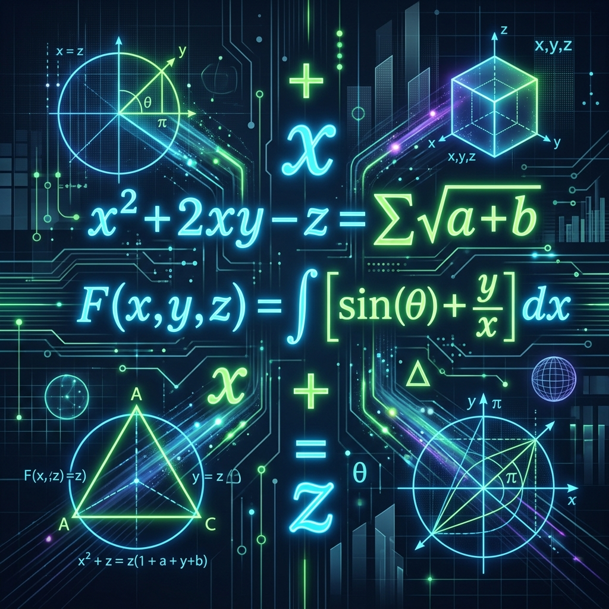

El Arte de Plantear Ecuaciones
Traducir el lenguaje común al lenguaje universal de las matemáticas
¿Qué significa "Plantear"?
Plantear una ecuación es un riguroso proceso de traducción lingüística y conceptual.
Salida Lenguaje Formal (Ecuación)
Es la base fundamental del modelado de sistemas físicos, económicos y astronómicos.
Los 5 Pasos de Oro para el Éxito
1. Identificar
Aislar y definir claramente las variables o incógnitas del sistema.
2. Traducir
Mapear los conectores lógicos de cantidad a operadores algebraicos.
3. Igualar
Establecer el punto de balance o igualdad de la ecuación física.
4. Coherencia
Asegurar homogeneidad dimensional de todos los términos (unidades).
5. Comprobar
Validar la consistencia lógica del resultado en el contexto original.
Diccionario de Traducción Rápida
| Término Verbal Común | Operador Matemático Asociado |
|---|---|
| "El doble de un valor", "El triple de un valor" | $2x$ / $3x$ |
| "Aumentado en", "Disminuido en", "Excede a" | $+k$ / $-k$ / $A - B = k$ |
| "Tres números consecutivos" | $x, x+1, x+2$ |
| "Es equivalente a", "Representa", "Nos da" | $=$ |
Ejemplo 1: La Suma de Consecutivos
Problema: La suma de tres números consecutivos es 72. Hallar los números.
1. Planteo $$x + (x+1) + (x+2) = 72$$
2. Operación $$3x + 3 = 72 \Rightarrow 3x = 69 \Rightarrow x = 23$$
Solución: Los números enteros consecutivos son 23, 24 y 25.
Ejemplo 2: Operadores Combinados
Problema: El doble de un número aumentado en 5 es igual a 21.
Ecuación $$2x + 5 = 21$$
Solución $$2x = 16 \Rightarrow x = 8$$
Un error común de los estudiantes es interpretar el enunciado como $2(x+5)$, lo cual alteraría el resultado final.

Ejemplo 3: Línea del Tiempo (Edades)
Problema: La edad de Ana es el triple de la de su hijo. Dentro de 10 años será el doble. ¿Qué edad tiene cada uno?
Hijo: $x$
Ana: $3x$
Hijo: $x + 10$
Ana: $3x + 10$
Igualdad $$3x + 10 = 2(x + 10) \Rightarrow 3x + 10 = 2x + 20 \Rightarrow x = 10$$
Resultado: Ana tiene 30 años; su hijo tiene 10 años.
Ejemplo 4: Modelado Geométrico
Enunciado
En un rectángulo, el largo es 4 cm mayor que el ancho y su perímetro es 32 cm. Hallar sus dimensiones.
Ancho: $x$
Largo: $x + 4$
Perímetro: $$2(x) + 2(x + 4) = 32$$
Cálculo Analítico
$$2x + 2x + 8 = 32$$
$$4x = 24 \Rightarrow x = 6$$
Largo = 10 cm
Ejemplo 5: Reparto de Cantidades
Problema: Se reparten 50 caramelos entre dos niños de modo que uno recibe 10 más que el otro.
Variables
Niño A: $x$
Niño B: $x + 10$
Resolución
$$2x + 10 = 50$$
$$2x = 40 \Rightarrow x = 20$$
Niño B = 30 caramelos
Ejemplo 6: Reto UNI I - Edades en el Tiempo
Problema (UNI): La edad de A hace $a$ años era a la de B como 5 es a 4. Dentro de $b$ años sus edades estarán en la relación de 7 a 6. Si actualmente la suma de sus edades es 46 años y la diferencia de sus edades es de 4 años, calcule $a+b$.
1. Invariante Temporal:
La diferencia de edades nunca cambia en el tiempo. Resolvemos el sistema en el presente:
$$A - B = 4 \quad \land \quad A + B = 46$$
A = 25 años, B = 21 años
2. Razones Temporales:
Pasado ($-a$ años): $$\frac{25-a}{21-a} = \frac{5}{4} \Rightarrow a=5$$
Futuro ($+b$ años): $$\frac{25+b}{21+b} = \frac{7}{6} \Rightarrow b=3$$
Ejemplo 7: Reto UNI II - Modelado Diofántico
Problema (UNI): Un distribuidor adquirió textos de Física a $30 y de Química a $20. Si gastó exactamente $500 y los textos de Química exceden al doble de Física, determina la cantidad máxima de textos de Química.
1. Ecuación Diofántica Lineal ($x, y \in \mathbb{Z}^+$):
$$30x + 20y = 500 \Rightarrow 3x + 2y = 50$$
$$y = 25 - 1.5x$$. Como $y$ es entero positivo, $x$ debe ser par: $x = 2k$.
2. Evaluación bajo restricción ($y > 2x$):
- Si $x=2 \Rightarrow y=22$ (Cumple: $22 > 4$)
- Si $x=4 \Rightarrow y=19$ (Cumple: $19 > 8$)
- Si $x=6 \Rightarrow y=16$ (Cumple: $16 > 12$)
- Si $x=8 \Rightarrow y=13$ (No cumple: $13 \ngtr 16$)
✨ Taller Inteligente de Ecuaciones
Generar Desafío IA
Traductor a Lenguaje Formal
Ingresa cualquier problema verbal y el motor IA lo estructurará bajo los 5 Pasos de Oro:
¡Cuidado! Evita estos errores
Olvidar Paréntesis
Al multiplicar el "doble de la suma", el multiplicador afecta a todos los términos dentro.
Mezclar Unidades
No operes minutos con horas o metros con centímetros sin antes hacer la conversión.
Resultados Absurdos
Si el cálculo de una edad da fraccionario o negativo, revisa el planteamiento original.
En Resumen...
- Lee el problema al menos 3 veces antes de estructurar variables.
- Traduce palabra por palabra metódicamente al lenguaje formal.
- Conserva el orden en cada una de las operaciones algebraicas.
- Comprueba siempre el valor obtenido con el enunciado original.
¿Dudas o Preguntas?
¡Gracias por participar en esta sesión!
"Las matemáticas son la música de la razón".